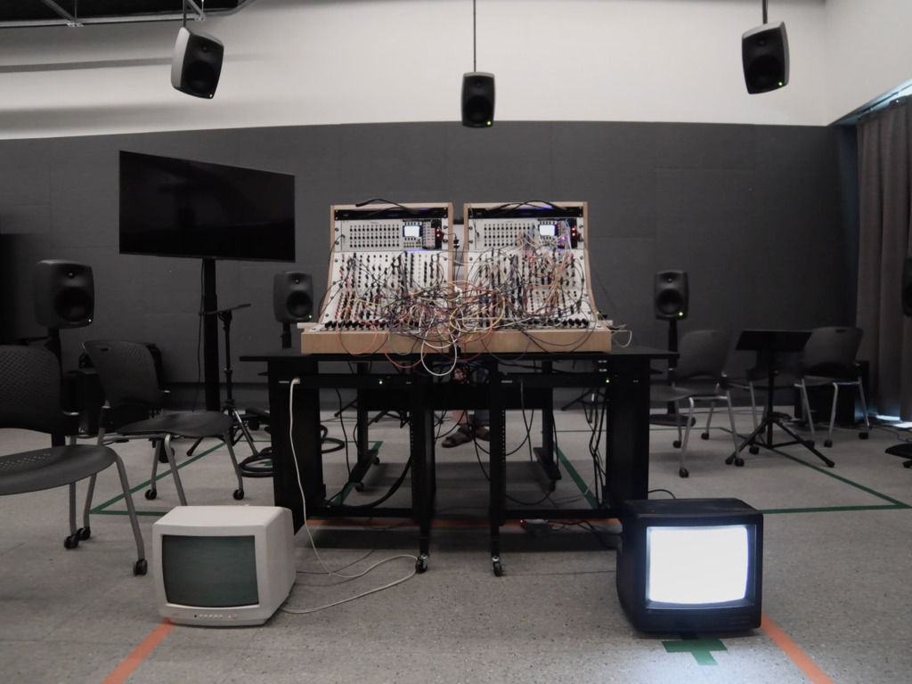

Performance for Sound Synthesis Spring Semester
I have been really interested in creating immersive and complex textures with the Serge and I wanted to focus more on this idea of maximality by using feedback paths and cross modulation of signals (feeding back and wave multiplier or cross patching oscillators using their frequency modulation input) instead of a random source such as noise or sample and hold to have more control over the patch overall. This effectively let all of the individual sounds or characters communicate in an easier and more efficient way, allowing for a balance of chaos and each sound's primary source. I also wanted to focus on giving every individual sound its own space, so as to not have the patch be so dense.For my final project I wanted to focus on the idea of characters and synthesizing organic and controlled random. I used two CRT TVs as a visual representation of these characters, one visualizes the Serge analog synthesizer, and the other visualizes SuperCollider, to show the communication between analog and digital. I performed this patch live because I felt it was important to interact with these characters in real time, or in an improvisational way.
For the final project I want to focus on the idea of maximality and characters. I really enjoy building up textures over time with the serge and then sort of taming them to have more control over the patch, or even just the volume of specific elements of the patch, this way I can really perform the patch. I want to focus on introducing a lot more control and space into my patching techniques in order to have a lot of elements stack but be in their own space. Ways of doing this may include creating signals in very dissected frequency ranges to give their air to breath in between. Or separate more percussive notes from other sounds. I'm also in some ways inspired by the idea of feedback, cybernetics and AI that La Synthèse Humaine talks about on his YouTube channel, and I think that language of patching will help me create characters in a more controlled random way.
As far as performance, I want to perform the patch live, which would require me to patch a few days in advance. I would like to use max just to rut audio directly to specific speakers in the spatial array. I was also thinking of routing audio to video ins of CRT TV’s to get scan lines for that data matrix style look , and having different audio from the patch go between the two TVs, to further expand the idea of characters and conversation, with visual oscillations.